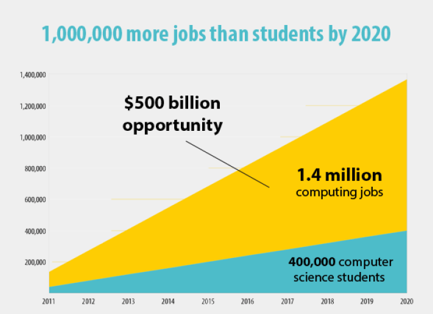

Kerry

IT Jobs
Job Description
Multimedia programmers are specialist software engineers who use their creative flair and technical ability to produce innovative digital products, such as Flash-based websites, mobile apps and interactive animated films.
They tend to use the latest technology and programming languages, such as HTML 5, Flash, PHP and Ruby on Rails. Without these guys Angry Birds would never exist. Terrifying, I know!
Multimedia programmers get involved throughout the entire project lifecycle. Firstly, they participate in the requirements gathering process, i.e. finding out the objectives of the proposed software solution.
Secondly, they ‘scope’ the project alongside animators, producers and 3D modellers, identifying what needs to be developed, how it needs to be developed and when it should be developed by.
Multimedia programmers also need to think about cross-platform integration, i.e. how the solution can be used across various different platforms. For instance, if you create a mobile app, it’s important to make sure it can be used on an iPhone, a Blackberry and a variety of Android devices to maximise the revenue potential.
Once this has all been worked out, the multimedia programmer will get stuck into the actual coding of the product.
During the development phase, they will also conduct automated unit testing. This innovative approach, which is known as test-driven development (TDD), essentially involves programming and testing in parallel. This makes the whole process much more efficient.
Once the development process is complete, more testing will be undertaken. This will involve conducting functional testing to ensure everything works properly, and user acceptance testing (UAT) to make sure the product fulfils the requirements of the end user.
Finally, once a product has been developed and implemented, a multimedia programmer will also be responsible for detecting and fixing any bugs.